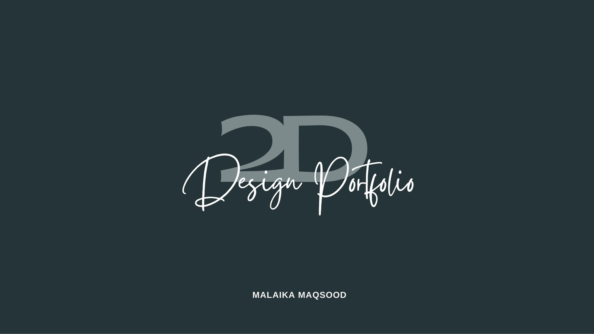
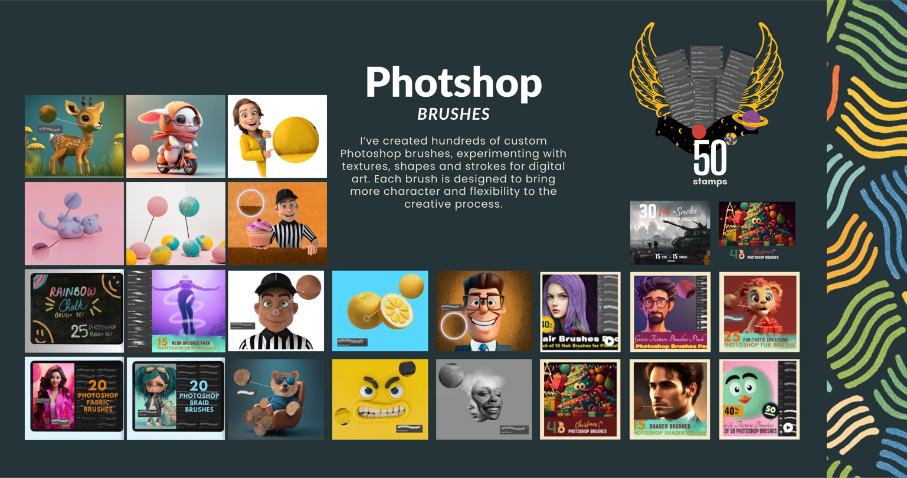
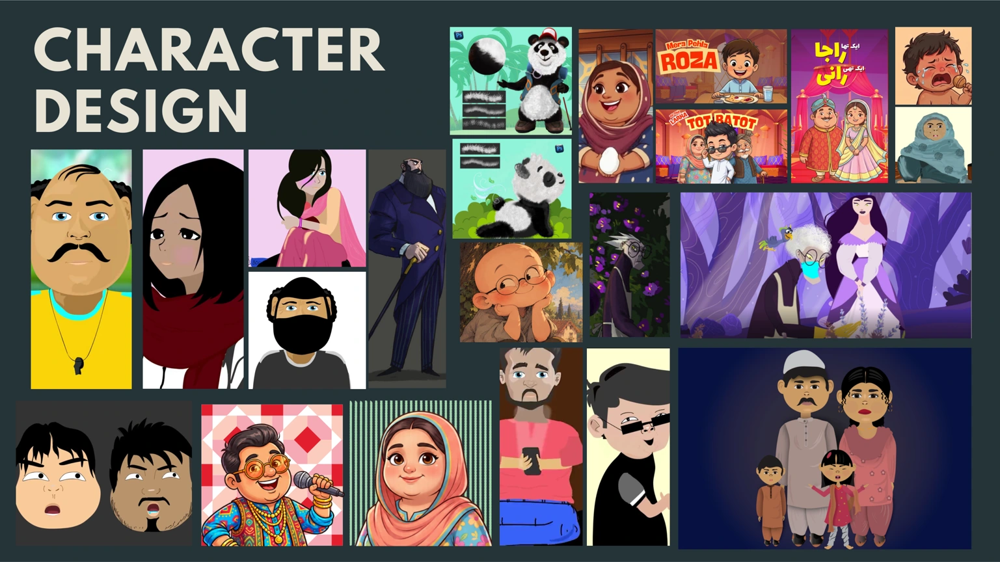
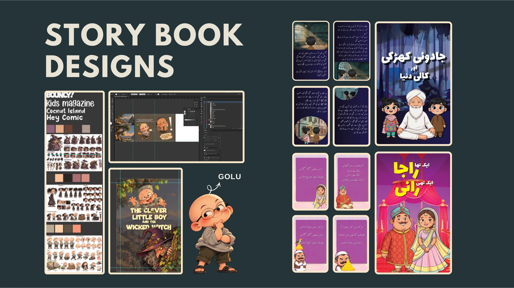
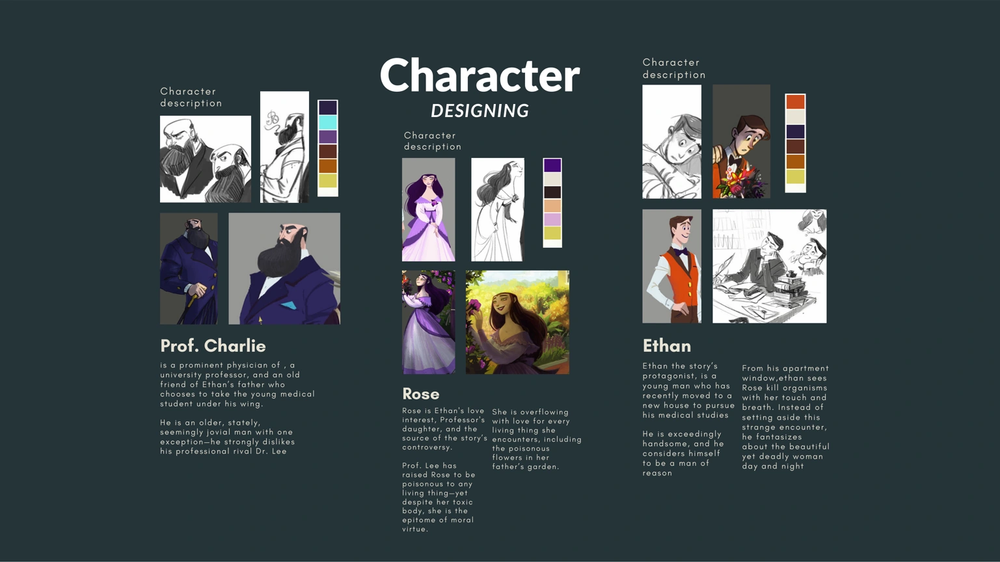

2D Design Portfolio MALAIKA MAQSOOD

50 stamps Photshop BRUSHES I’ve created hundreds of custom Photoshop brushes, experimenting with textures, shapes and strokes for digital art. Each brush is designed to bring more character and flexibility to the creative process. 30 15 15 Smoke Fire AND BRUSHES PHOTOSHOP BRUSHES FIRE SMOKE + Christmas PHOTOSHOP BRUSHES

CHARACTER DESIGN

STORY BOOK DESIGNS GOLU

is a prominent physician of , a university professor, and an old friend of Ethan’s father who chooses to take the young medical student under his wing. He is an older, stately, seemingly jovial man with one exception—he strongly dislikes his professional rival Dr. Lee Character description Prof. Charlie Rose is Ethan's love interest, Professor's daughter, and the source of the story’s controversy. Prof. Lee has raised Rose to be poisonous to any living thing—yet despite her toxic body, she is the epitome of moral virtue. She is overflowing with love for every living thing she encounters, including the poisonous flowers in her father’s garden. Character description Rose Ethan the story’s protagonist, is a young man who has recently moved to a new house to pursue his medical studies He is exceedingly handsome, and he considers himself to be a man of reason From his apartment window,ethan sees Rose kill organisms with her touch and breath. Instead of setting aside this strange encounter, he fantasizes about the beautiful yet deadly woman day and night Character description Ethan Character DESIGNING
